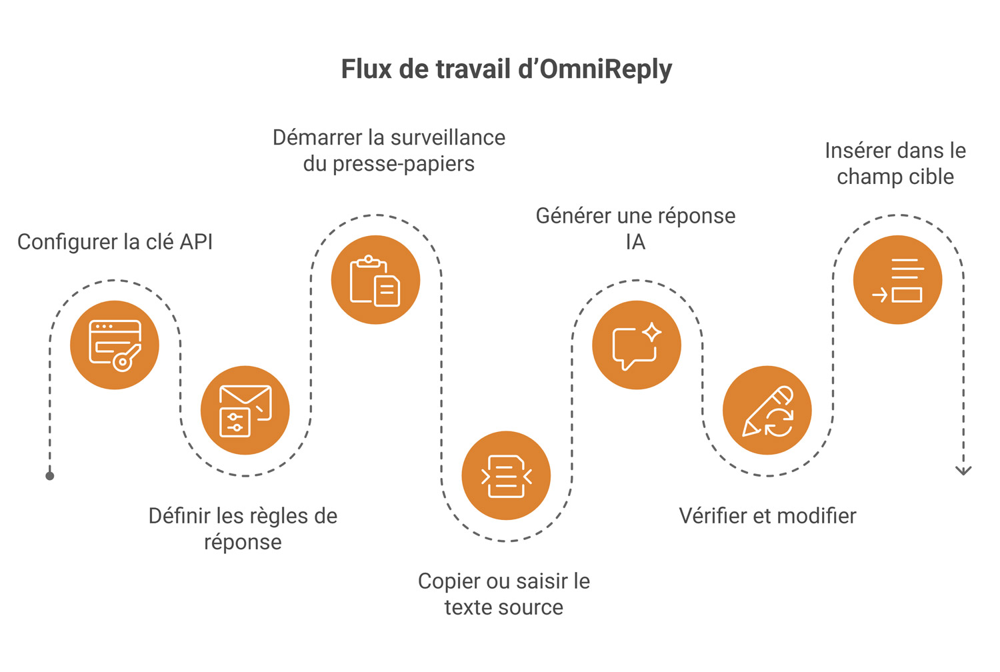
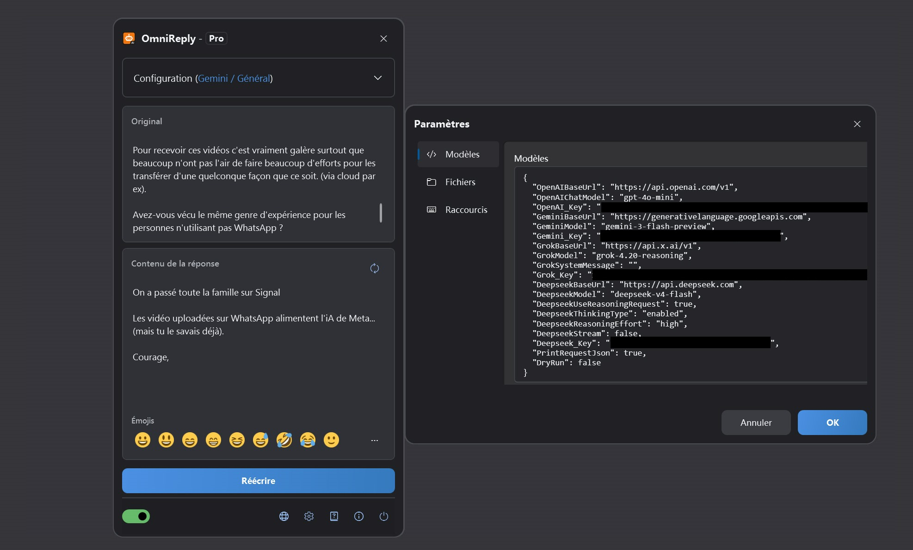
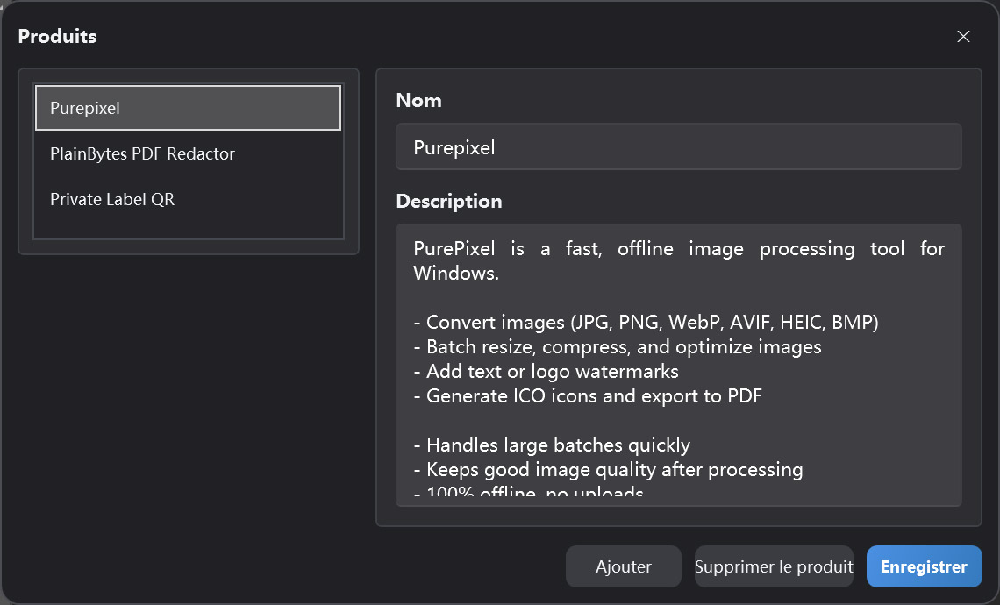

Clipboard-driven AI reply assistant
Guide d'utilisation d'OmniReply
Ce guide présente l'interface d'OmniReply, sa configuration, la génération de réponses par IA et le fonctionnement de l'insertion dans une autre application. Commencez par le démarrage rapide, puis revenez aux chapitres détaillés lorsque vous avez besoin de précisions.
1. Découvrir OmniReply
OmniReply réduit le temps entre la lecture d'un message et la rédaction d'une réponse adaptée. L'application capture le texte source, génère un brouillon, vous laisse le vérifier, puis l'insère dans l'application cible.
1.1 Qu'est-ce qu'OmniReply ?
OmniReply est un assistant Windows de réponse rapide basé sur l'IA. Il surveille le texte copié, le combine avec le modèle, le contexte, la langue, le style, l'objectif et la longueur de réponse sélectionnés, puis génère une réponse modifiable. Après vérification, vous pouvez l'insérer dans le champ de saisie d'une autre application.
1.2 Cas d'utilisation courants
Réponses sur les réseaux sociaux
Préparer des réponses naturelles aux commentaires, messages privés, publications et discussions de communauté.
Support client
Transformer rapidement les questions des utilisateurs en explications claires, messages rassurants, étapes suivantes ou réponses d'assistance.
Recommandations produit
Utiliser les informations produit pour créer des recommandations concises, des explications de fonctionnalités et des réponses comparatives.
1.3 Flux de travail de base

2. Interface et fonctions
La plupart des actions quotidiennes se font dans la fenêtre flottante principale. La fenêtre des paramètres et le gestionnaire de produits servent surtout à la configuration.
2.1 Fenêtre principale
| Zone | Rôle | Conseil |
|---|---|---|
| Barre de titre | Affiche le nom de l'application et l'édition actuelle. La fenêtre peut être réduite en bulle flottante. | Réduisez la fenêtre lorsqu'elle vous gêne pendant l'attente d'un texte copié. |
| Zone de configuration | Permet de choisir le modèle, le contexte, la langue, le style, l'objectif, la longueur et le produit. | Après avoir modifié les règles, régénérez la réponse pour appliquer les nouveaux paramètres. |
| Texte source | Affiche le texte capturé depuis le presse-papiers et accepte aussi une saisie manuelle. | Utile lorsque la copie est peu pratique ou si vous voulez ajuster le texte source avant génération. |
| Zone de réponse | Affiche la réponse générée par l'IA et permet de la modifier. | Vérifiez toujours les faits, le ton et les informations sensibles avant l'insertion. |
| Barre d'emojis | Insère des emojis courants dans la réponse. | Les emojis insérés restent des caractères texte et peuvent être modifiés ou supprimés. |
| Barre d'état | Contrôle la surveillance du presse-papiers, la langue, les paramètres, les informations et la fermeture. | Activez la surveillance du presse-papiers avant d'utiliser la capture automatique. |

2.2 État de la bulle flottante
Lorsqu'OmniReply est réduit, il devient une bulle flottante. Vous pouvez la déplacer et double-cliquer dessus pour rouvrir la fenêtre principale. Sa couleur indique l'état du service : une bulle colorée signifie que la surveillance du presse-papiers est active ; une bulle grise signifie qu'elle est désactivée. Pendant l'attente d'une réponse IA, la bulle peut aussi afficher un état de requête en cours.
2.3 Fenêtre des paramètres
Paramètres des modèles
Gérer les clés API, les URL de base et les noms de modèles pour OpenAI, Gemini, Grok et DeepSeek.
Paramètres réseau
Activer un proxy HTTP manuel si nécessaire. S'il est désactivé, OmniReply utilise la configuration proxy du système.
Paramètres des raccourcis
Modifier les raccourcis globaux pour afficher la fenêtre, activer la surveillance, actualiser et insérer la réponse.
Paramètres de fichiers
Choisir le dossier de l'historique. Si aucun dossier n'est sélectionné, l'historique n'est pas enregistré.
2.4 Gestionnaire de produits
Le gestionnaire de produits conserve les noms et descriptions de produits pour le profil actuel. Lorsque l'objectif de réponse est une recommandation produit, la description du produit sélectionné est envoyée comme contexte afin que la réponse soit plus précise.

3. Démarrage rapide
Suivez ces étapes lors de la première utilisation. Ensuite, le flux quotidien se limite généralement à copier, vérifier et insérer.
Ajouter une clé API
Ouvrez les paramètres et saisissez la clé API du service d'IA que vous souhaitez utiliser. Les fournisseurs inutilisés peuvent rester vides. Le modèle actuellement sélectionné doit disposer d'une clé valide.
Définir les règles de réponse
Choisissez le modèle, le contexte, la langue, le style, l'objectif de réponse et la longueur. Pour une recommandation produit, sélectionnez aussi le produit concerné.
Démarrer la surveillance du presse-papiers
Activez l'interrupteur de surveillance dans la barre d'état ou appuyez sur Ctrl + Shift + X.
Copier ou saisir le texte source
Copiez une question, un commentaire ou un message depuis une autre application. Vous pouvez aussi saisir ou coller le texte directement dans OmniReply, puis régénérer manuellement.
Générer une réponse IA
Lorsqu'un nouveau texte est copié, OmniReply le lit et appelle le modèle sélectionné. Pour générer à nouveau, cliquez sur Actualiser ou appuyez sur Ctrl + Shift + R.
Vérifier et modifier
La zone de réponse est modifiable. Ajustez les formulations, retirez les passages inutiles, ajoutez du contexte ou insérez des emojis. Ne sautez pas la vérification simplement parce que le brouillon a été généré par l'IA.
Insérer dans le champ cible
Cliquez d'abord dans le champ de saisie cible afin que le curseur soit au bon endroit. Cliquez ensuite sur Insérer, ou appuyez sur Ctrl + Shift + Enter.
4. Fonctions en détail
Cette section explique le rôle de chaque paramètre et son influence sur la réponse finale.
4.1 Modèles d'IA et clés API
| Modèle | Paramètre requis | Description |
|---|---|---|
| ChatGPT (OpenAI) | OpenAI_Key |
Utilise un point d'accès compatible OpenAI Chat Completions. L'URL de base et le nom du modèle peuvent être configurés. |
| Gemini (Google) | Gemini_Key |
Utilise Google Gemini. L'URL de base Gemini et le nom du modèle peuvent être configurés. |
| Grok (xAI) | Grok_Key |
Utilise xAI Grok. L'URL de base, le nom du modèle et le message système peuvent être configurés. |
| DeepSeek (DeepSeek) | Deepseek_Key |
Prend en charge les requêtes compatibles OpenAI ou les paramètres de requête de type reasoning DeepSeek. |
Le modèle sélectionné détermine la clé nécessaire. Les fournisseurs que vous n'utilisez pas peuvent rester vides.
4.2 Règles de réponse
| Règle | Effet | Recommandation |
|---|---|---|
| Contexte | Définit la plateforme ou la situation de réponse, par exemple réseau social, forum ou support. | Choisissez le contexte le plus proche de la conversation réelle. |
| Langue | Contrôle la langue de sortie. Le mode automatique essaie de suivre le contexte source. | Choisissez une langue précise lorsque la réponse doit rester dans une langue donnée. |
| Style | Contrôle le ton, le persona et le choix des mots. | Pour les commentaires publics, un style naturel, amical et peu commercial est souvent préférable. |
| Objectif | Oriente l'intention de la réponse : recommandation, support, explication ou objection. | Vérifiez l'objectif avant de générer, car il influence fortement le brouillon. |
| Longueur | Détermine si la réponse doit être courte, moyenne ou détaillée. | Sur les plateformes sociales, une réponse courte ou automatique est souvent un bon point de départ. |
4.3 Données de recommandation produit
Les données de recommandation comprennent le nom et la description du produit. Lorsqu'un objectif lié à la recommandation est sélectionné, OmniReply envoie la description du produit choisi comme contexte à l'IA. Une bonne description produit devrait inclure :
- Le problème que le produit résout.
- Ses fonctionnalités clés et ses avantages.
- Les utilisateurs ou situations auxquels il convient.
- S'il fonctionne hors ligne, téléverse des données ou présente des limites importantes.
- Une formulation claire et réaliste, sans promesses exagérées.
4.4 Surveillance du presse-papiers
Lorsque la surveillance est activée, OmniReply écoute les mises à jour du presse-papiers système et lit le nouveau texte. Pour éviter les déclenchements accidentels, l'application ignore le texte vide, le texte répété et les copies effectuées lorsque la fenêtre OmniReply elle-même est active.
4.5 Modification et emojis
La zone de réponse est un champ de texte modifiable. Vous pouvez réécrire directement le texte généré par l'IA ou insérer des emojis Unicode courants depuis la barre ou la fenêtre d'emojis. Certains systèmes ou contrôles WPF peuvent ne pas afficher les emojis en couleur de façon fiable, mais les caractères insérés restent des emojis Unicode standard.
4.6 Insertion et raccourcis
Lors de l'insertion, OmniReply masque d'abord sa propre fenêtre, attend brièvement que le champ cible retrouve le focus, puis simule la saisie au clavier caractère par caractère. Les retours à la ligne sont gérés par une touche de nouvelle ligne simulée. Les raccourcis par défaut sont :
| Action | Raccourci par défaut |
|---|---|
| Afficher ou masquer la fenêtre principale | Ctrl + Shift + D |
| Démarrer ou arrêter la surveillance du presse-papiers | Ctrl + Shift + X |
| Régénérer la réponse | Ctrl + Shift + R |
| Insérer la réponse | Ctrl + Shift + Enter |
4.7 Historique
Après avoir sélectionné un dossier d'historique dans les paramètres de fichiers, OmniReply peut enregistrer le texte source, les réponses générées et les heures de requête. Si aucun dossier d'historique n'est sélectionné, aucun historique n'est écrit.
5. Données, confidentialité et licence
OmniReply conserve les paramètres et les données de profil sur votre appareil. Les requêtes IA sont envoyées directement au service d'IA que vous choisissez.
5.1 Données enregistrées localement
| Données | Description | Gestion visible par l'utilisateur |
|---|---|---|
| Paramètres de l'application | Points d'accès des modèles, clés API, proxy, raccourcis, historique et options associées. | Consultables et modifiables dans la fenêtre des paramètres. |
| Profils et données produit | Profil actuel, liste de produits, contexte sélectionné et règles de réponse. | Gérés dans la fenêtre principale et le gestionnaire de produits. |
5.2 Contenu envoyé aux services d'IA
Lors de la génération d'une réponse, OmniReply envoie le texte source, les règles de réponse actuelles, le contexte produit nécessaire et les paramètres du modèle au service d'IA sélectionné. Les requêtes utilisent votre propre clé API. OmniReply ne les fait pas transiter par un serveur intermédiaire.
5.3 Sécurité des clés API
- Ne partagez pas de fichiers de configuration contenant des clés API.
- Sur un ordinateur partagé, vérifiez que les paramètres et l'historique sont traités correctement avant de partir.
- Avant de copier du contenu sensible, consultez les règles de confidentialité et de traitement des données du service d'IA sélectionné.
- Si aucun dossier d'historique n'est configuré, OmniReply n'enregistre ni le texte source ni l'historique des réponses générées.
5.4 Éditions Free et Pro
| Édition | Description |
|---|---|
| Free | Autorise 10 générations par modèle et par jour local, avec d'éventuelles limitations sur certains choix de règles. |
| Pro | Débloque les fonctions Pro. L'achat et l'état de licence sont affichés dans la fenêtre de licence de l'application. |
6. FAQ et dépannage
Si quelque chose ne fonctionne pas comme prévu, commencez ici. La plupart des problèmes sont liés à l'interrupteur de surveillance, aux clés API, au réseau ou proxy, aux conflits de raccourcis ou au focus du champ cible.
6.1 Rien ne se passe après la copie
Vérifiez dans l'ordre :
- La surveillance du presse-papiers est-elle activée dans la barre d'état ?
- Le contenu copié est-il du texte brut et non vide ?
- OmniReply attend-il encore la fin de la requête IA précédente ?
- Le texte copié est-il exactement le même que le dernier texte capturé ?
- Avez-vous copié du contenu dans la fenêtre OmniReply ? Les copies effectuées depuis la fenêtre active d'OmniReply sont ignorées.
6.2 Clé API non configurée
Le fournisseur du modèle sélectionné n'a pas de clé configurée. Ouvrez les paramètres et saisissez la clé API de ce fournisseur, ou choisissez un modèle dont le fournisseur est déjà configuré.
6.3 Échec ou délai d'attente de la requête IA
Les causes courantes sont une clé invalide, un quota épuisé, un service saturé, un problème réseau, une mauvaise configuration proxy ou un délai d'attente. Vérifiez d'abord que votre navigateur et le proxy système peuvent accéder au service d'IA, puis contrôlez l'URL de base, le nom du modèle et la clé API dans les paramètres.
6.4 La langue ou le style de la réponse ne correspond pas
Vérifiez la langue, le contexte, le style, l'objectif et la longueur de réponse. Pour les modèles compatibles OpenAI, une langue fixe est incluse dans le message système. Si le résultat reste incohérent, choisissez une langue cible précise et générez à nouveau.
6.5 La réponse a été insérée au mauvais endroit
Avant l'insertion, cliquez dans le champ cible et assurez-vous que le curseur est au bon endroit. L'insertion simule une saisie au clavier : si le focus est dans une autre fenêtre ou un autre contrôle, la réponse y sera saisie.
6.6 Les raccourcis ne fonctionnent pas
Le raccourci est peut-être déjà utilisé par une autre application. Ouvrez l'onglet Raccourcis dans les paramètres et choisissez une combinaison avec Ctrl, Shift, Alt ou Win, en évitant les conflits avec les raccourcis système.
6.7 Problèmes d'affichage des emojis
Sur certains systèmes, les champs texte WPF peuvent ne pas afficher les emojis en couleur de façon fiable. Même s'ils apparaissent en monochrome dans OmniReply, les emojis insérés et écrits restent généralement des caractères Unicode standard. Leur affichage en couleur dans l'application cible dépend de cette application et de la prise en charge des polices système.
6.8 L'historique n'a pas été enregistré
L'historique n'est enregistré que si un dossier d'historique est sélectionné dans les paramètres de fichiers. Un champ vide signifie qu'aucun historique n'est enregistré. Vérifiez que le dossier existe et que votre compte utilisateur dispose des droits d'écriture.
6.9 Quelles informations fournir au support ?
Indiquez la version de l'application, la version de Windows, le modèle sélectionné, le message d'erreur, l'utilisation éventuelle d'un proxy, la reproductibilité du problème, les étapes de reproduction et des captures d'écran si elles sont utiles. N'envoyez jamais de véritables clés API.